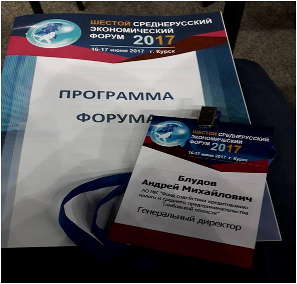
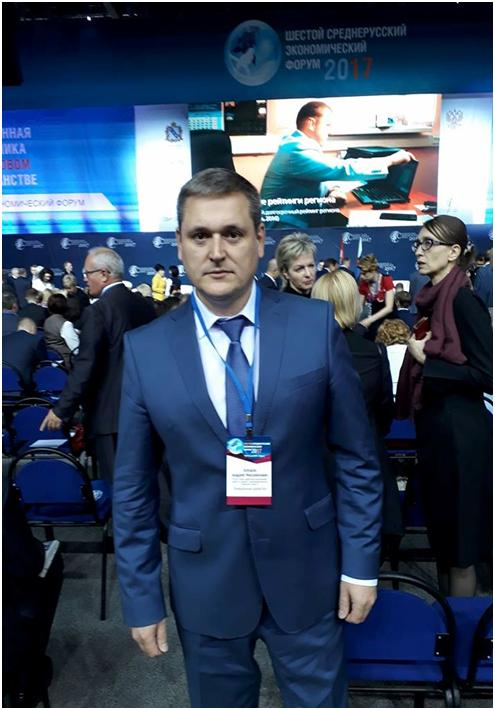

VI Среднерусский экономический форум 2017
16-17 июня 2017 года в Курске прошёл VI Среднерусский экономический форум, основной темой которого стала «Современная экономика в цифровом пространстве». На пленарном заседании с приветственным словом выступил полномочный представитель Президента РФ в Центральном федеральном округе Александр Беглов, который передал от Президента РФ Владимира Путина пожелания успехов участникам форума. А. Беглов подчеркнул важность и актуальность избранной темы и напомнил, что именно цифровую экономику глава государства определил в декабре 2016 года как один из приоритетов для экономического развития страны.
Вопросы, поднятые на пленарной дискуссии форума, далее обсуждались на круглых столах, посвященных цифровизации в системе государственного управления, внедрению информационных технологий в промышленности и сельском хозяйстве, в банковской сфере и т.д. Деловая программа первого дня работы форума включала 13 секционных заседаний и 4 выставки.
В работе тематического модуля «Новая архитектура поддержки малого и среднего предпринимательства» принял участие генеральный директор АО МК «Фонд содействия кредитованию малого и среднего предпринимательства Тамбовской области» Андрей Блудов.
Работа форума продолжилась 17 июня в рамках XVII Курской Коренской ярмарки, участниками которой становятся более 1000 компаний из России, стран ближнего и дальнего зарубежья.

